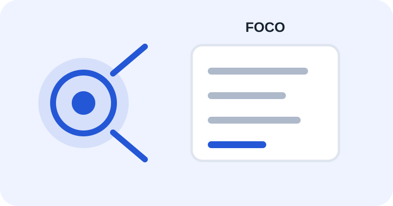

Lembretes Antes De Começar
Seu ambiente de estudo importa. A proposta aqui é reduzir distrações sem tratar toda utilização de redes sociais como prejudicial.

Reduza O Scroll Infinito
A American Psychological Association aponta que o scroll infinito pode dificultar que adolescentes percebam e interrompam o próprio uso das redes sociais.
Uma revisão sistemática publicada em 2026 analisou 25 estudos e encontrou, na maioria deles, associação entre uso problemático de redes sociais e desatenção em adolescentes. Os autores destacam que muitos estudos são transversais e que a heterogeneidade metodológica limita conclusões sobre causalidade.
Outra revisão sistemática, com 23 estudos sobre crianças e jovens, encontrou resultados mistos, mas relatou associações entre uso excessivo e pior desempenho em atenção, memória de trabalho e funções executivas.
Na prática: durante o estudo, deixe o celular longe, desative notificações e determine momentos específicos para conferir redes sociais.
Fontes: APA — The Science Of How Social Media Affects Youth · Fabio & Picciotto, 2026 — revisão sistemática · Revisão sistemática sobre desenvolvimento cognitivo
Não Estude No Automático
O objetivo não é acumular horas. É transformar tempo em aprendizagem.
- Resolva questões.
- Registre os erros.
- Revise o conceito que faltou.
- Refaça a questão depois.
Proteja Seu Tempo
Antes de começar, defina o que será estudado e qual quantidade de questões será resolvida. Um objetivo concreto reduz a chance de trocar estudo por distração.
Regra Simples
Deixe a distração difícil e o estudo fácil. O celular longe da mesa, notificações desativadas e uma tarefa definida são mudanças pequenas que tornam o ambiente mais favorável à concentração.